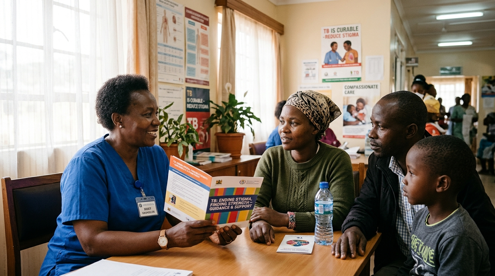

Clinical & Operational Toolkits
Evidence-based toolkits, laboratory protocols, and standard operating procedures developed by KNCV Tuberculosis Foundation to empower frontline healthcare providers, researchers, and national TB programs worldwide.
Core Implementation Toolkits
Practical, open-access tools, clinical algorithms, and deployment roadmaps designed for immediate public health application.

PCF
Comprehensive operational toolkit to systematically map patient pathways, eliminate barriers to diagnosis, address care delays, and implement patient-first TB programming.

Global Digital Adherence Tool
International implementation framework for digital adherence technologies (DAT), supporting national programs in rolling out smart pillboxes, Video Observed Therapy, and adherence platforms.
Stool-based Testing for TB
Standard operating procedures and clinical guidance for stool specimen molecular testing with GeneXpert Ultra to diagnose tuberculosis in children and patients unable to produce sputum.

Stigma Toolkit
Actionable toolkit providing validated measurement scales and intervention modules to identify, monitor, and eliminate tuberculosis stigma and discrimination in healthcare facilities.
Can’t find what you need?
Tell us what you’d like to learn or ask about tailored training for your organisation.